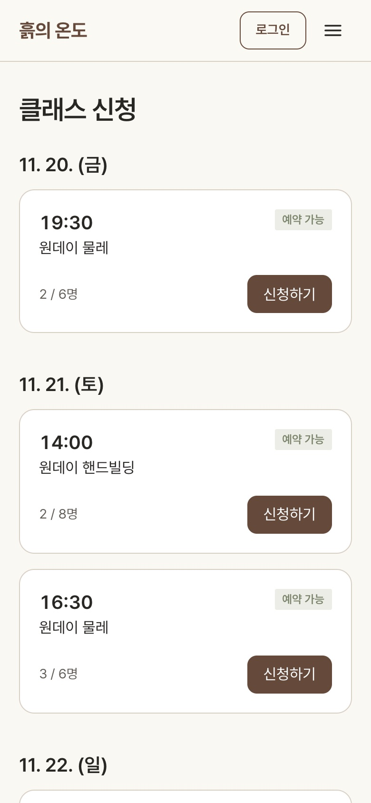
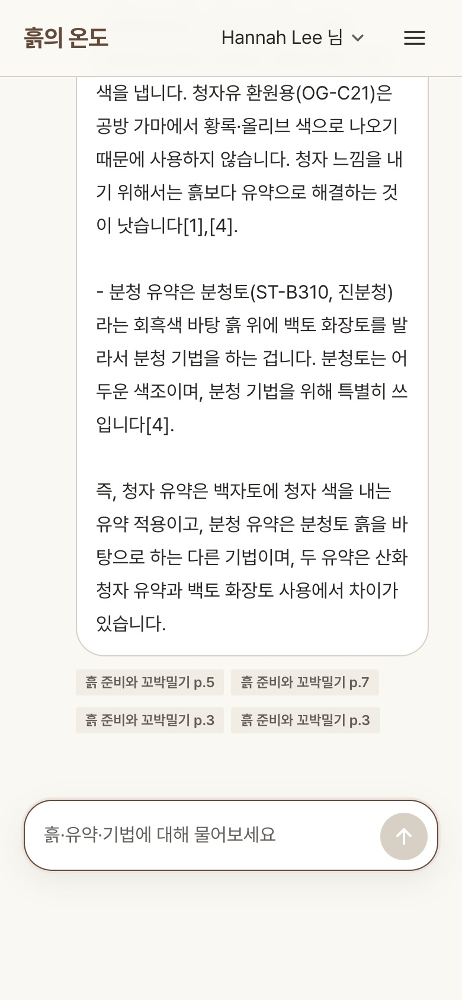
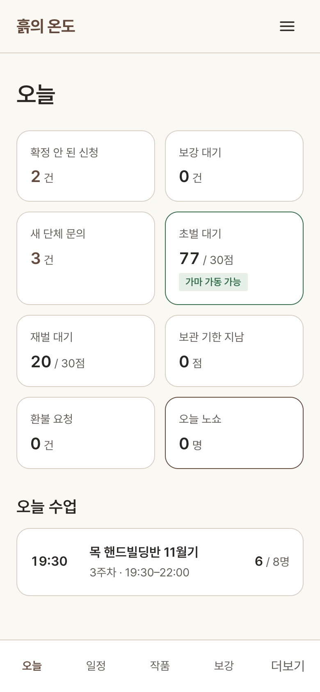
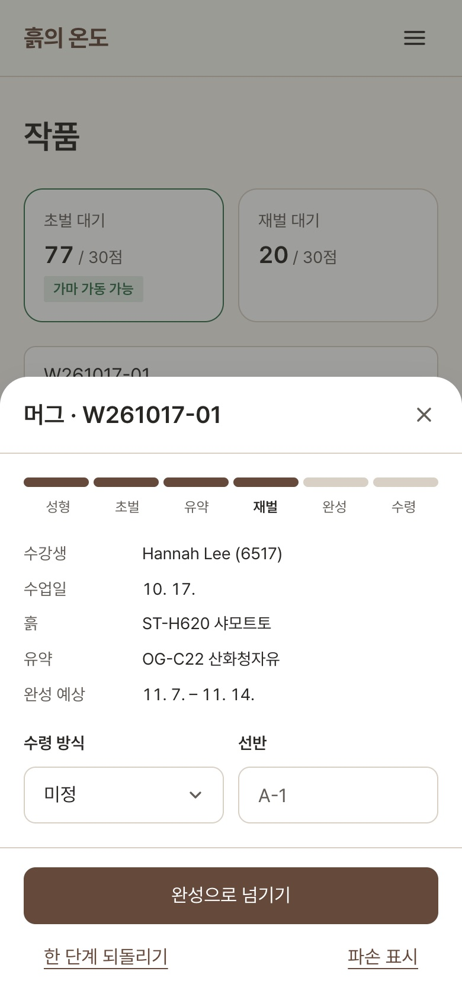
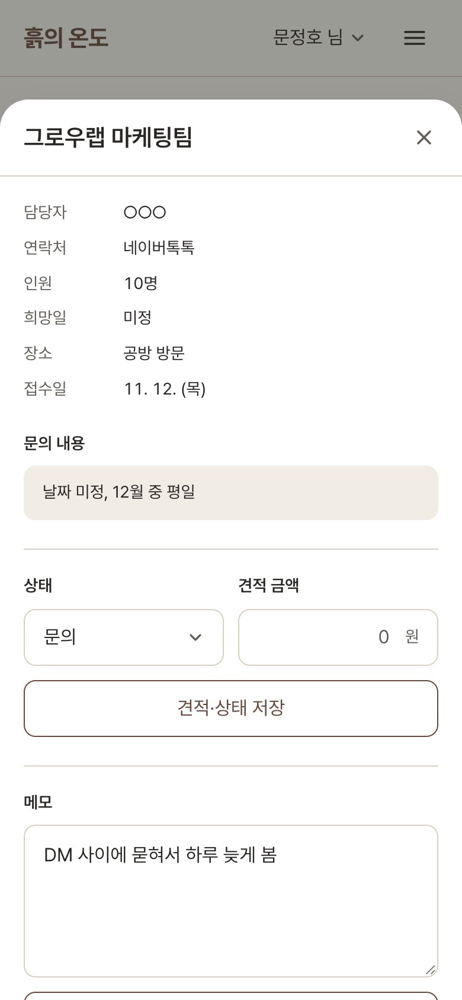

수강생
내 작품 확인하기
- 로그인
- 필요 없음
- 예약 번호 · 뒤 4자리
DM-0921-2·2563
- 메뉴 내 작품에서 예약 번호와 뒤 4자리를 넣고 조회합니다.
- 작품마다 6단계 중 현재 위치와 완성 예상 기간을 봅니다.
- 질문하기에서 “청자 유약이랑 분청 유약은 뭐가 달라요?”를 보냅니다.
성공 머그 “재벌 중”, 답변 아래 “자료 이름 p.쪽”
다시 하기 조회·질문만 하므로 바뀌는 데이터가 없습니다.
서비스 화면
지금 운영 중인 시험 서비스에서 그대로 캡처했습니다.
수강생 · 휴대폰


강사 · 대표



전과 후
지금DM과 네이버 예약을 따로 보고, 확정했는지 대화를 다시 찾습니다.
도입 후신청과 확정이 한 목록에 모입니다. 정원을 넘는 신청은 저장되지 않습니다.
지금“어디까지 왔어요?” DM마다 작품 엑셀을 찾아 답합니다.
도입 후강사가 단계를 넘기면 수강생이 직접 확인합니다. 완성일은 기간으로 안내합니다.
지금공급처 PDF와 수업 노트를 뒤져 답합니다.
도입 후자료에서 찾은 답과 근거 위치가 함께 나옵니다. 영어 질문은 영어로 답합니다.
지금다른 반 빈자리를 강사가 직접 찾습니다.
도입 후같은 주·다른 반 빈자리만 후보로 나오고, 강사 승인 후 확정됩니다.
지금회사 문의가 예약 DM 사이에 묻힙니다.
도입 후문의 양식으로 받아 문의 → 견적 → 확정 → 완료로 관리합니다.
보강 승인, 환불 승인, 견적 금액은 직원이 확인한 뒤에만 반영됩니다.
작품 단계는 한 칸씩 되돌리고, 노쇼 표시도 되돌릴 수 있습니다.
식기·전자레인지 질문은 근거가 없으면 “공방에 확인해 주세요”로 넘깁니다.
수강생
DM-0921-2 · 2563성공 머그 “재벌 중”, 답변 아래 “자료 이름 p.쪽”
다시 하기 조회·질문만 하므로 바뀌는 데이터가 없습니다.
강사
test1@naver.com · 12341234W261017-01을 검색해 엽니다.DM-0921-2를 조회해 머그가 “완성”으로 바뀐 것을 봅니다.성공 수강생 화면에 바로 “완성”과 보관 기한이 보임
원래대로 같은 작품에서 한 단계 되돌리기를 누릅니다.
대표
admin@naver.com · 12341234성공 “견적 발송” 탭에 그로우랩 마케팅팀과 금액
원래대로 상태를 문의로, 금액을 비우고 저장합니다.
체험 데이터는 모두 가상이며 여러 사람이 함께 씁니다. 바꾼 내용은 ‘원래대로’ 순서로 돌려 주세요. 같은 예약 번호로 5번 틀리면 10분 동안 조회가 잠깁니다.
도입 조건
정해지지 않은 항목은 ‘확인 필요’로 두었습니다.